CS 229 projects, Fall 2018 edition
Best Poster Award projects
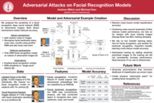
All project posters and reports
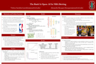
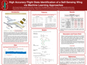
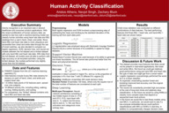
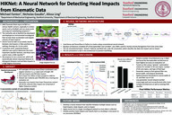
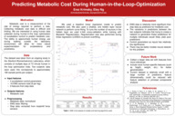
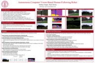
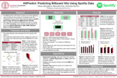
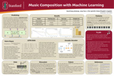
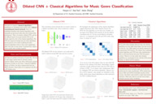
 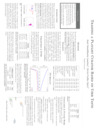
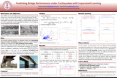
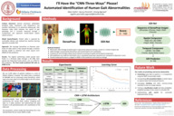
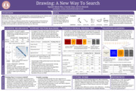
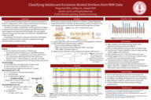
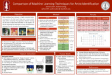
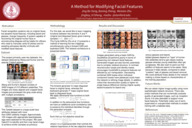
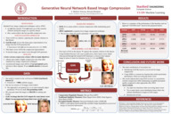
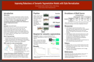
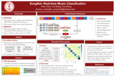
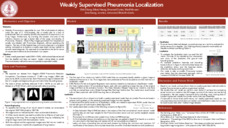
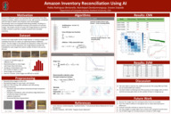
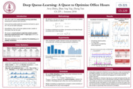
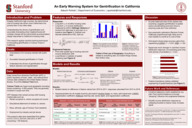
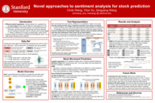
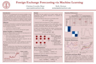
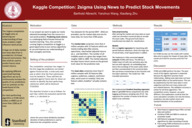
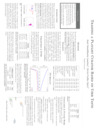
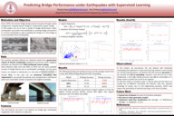
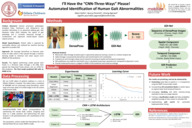
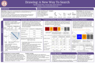
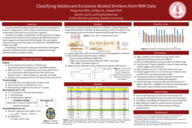
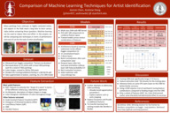
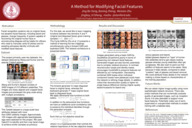
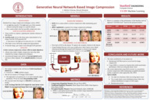
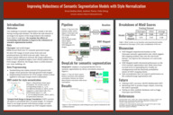
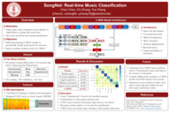
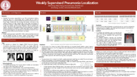
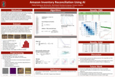
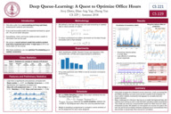
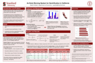
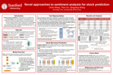
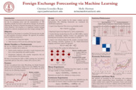
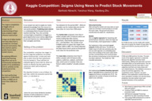
 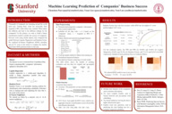
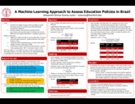
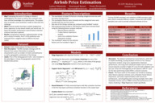
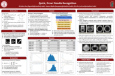
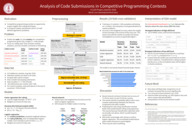
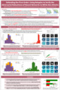
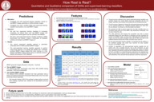
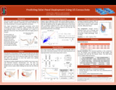
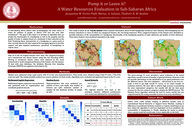
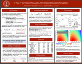
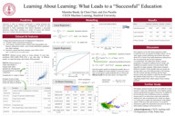
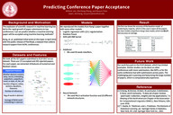
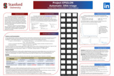
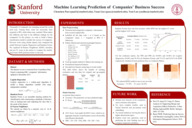
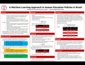
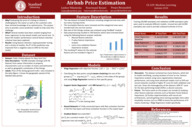
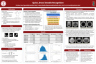
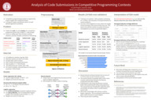
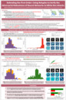
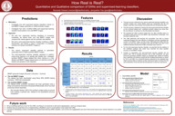
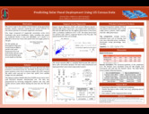
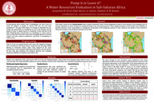
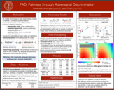
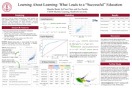
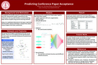
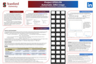


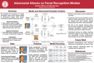
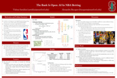
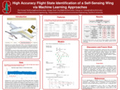
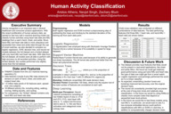
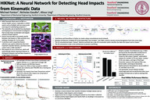
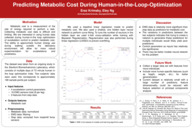
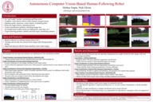
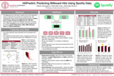
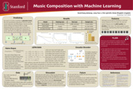
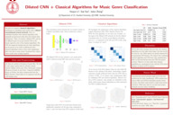
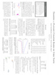
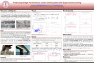
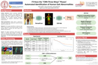
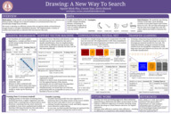
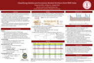
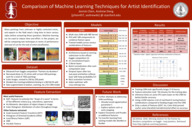
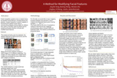
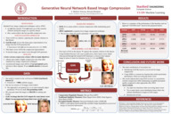
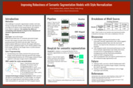
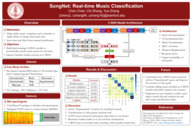
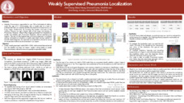

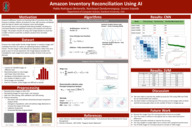
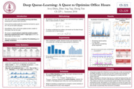
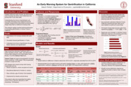
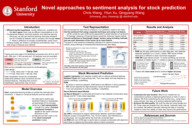
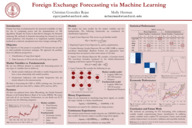
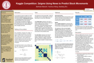
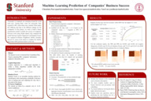
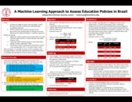
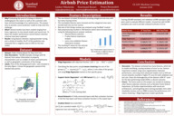
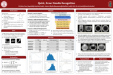
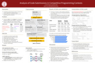
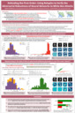
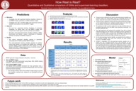
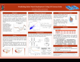
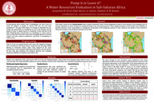
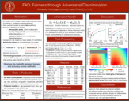
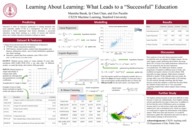
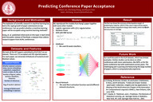
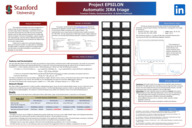